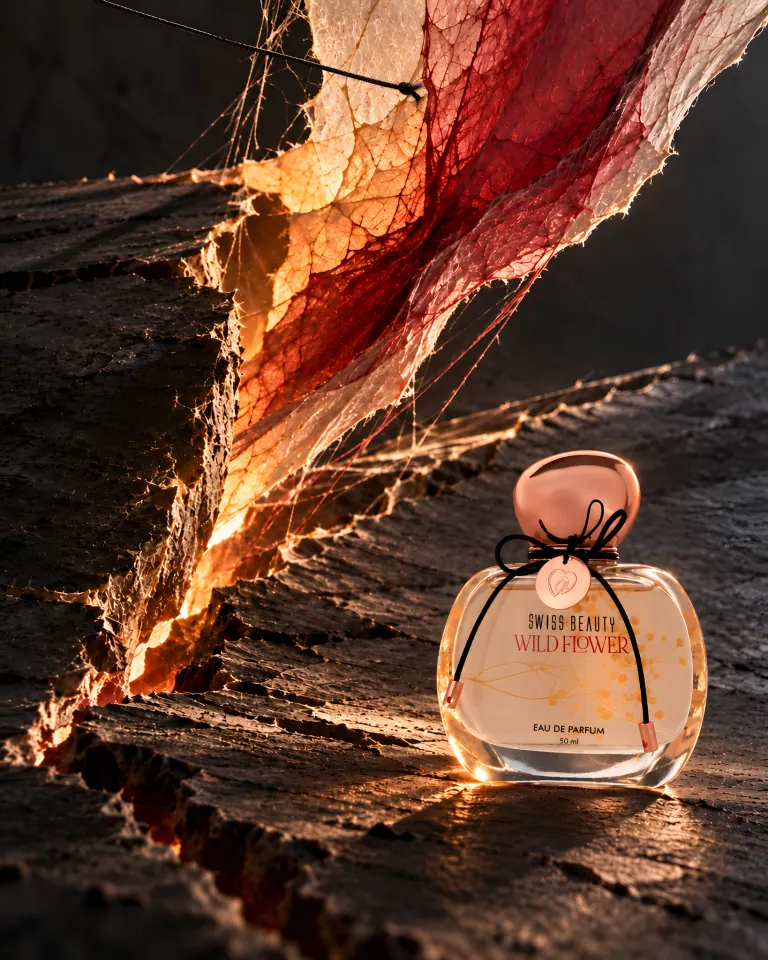
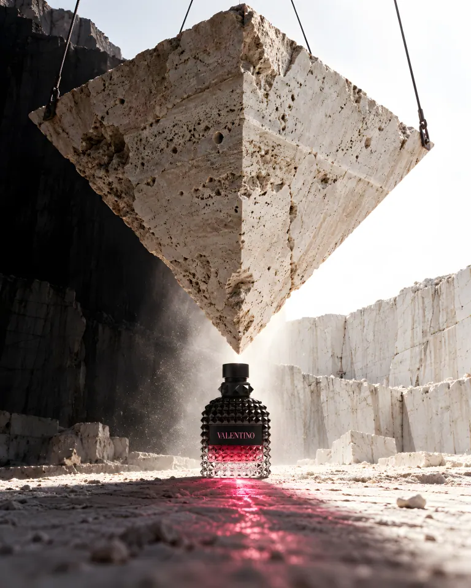
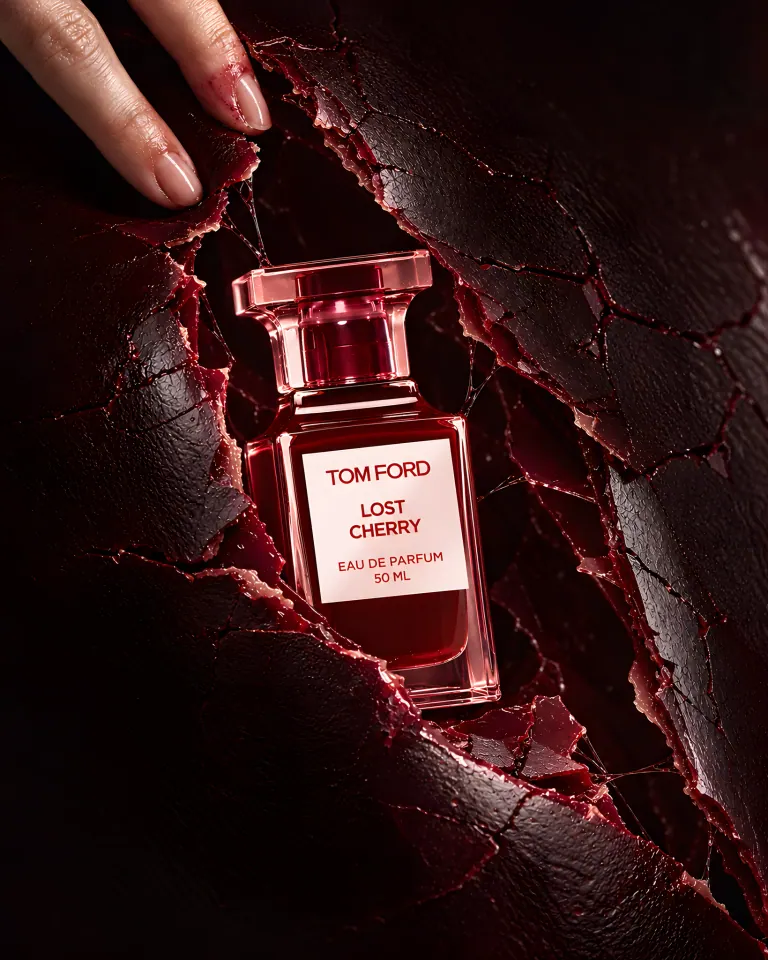

THE FIRST SECOND
Five frames inside the instant an orange becomes juice.
Food · Unbranded concept
View the seriesCommercial art direction & campaign concepts.
Self-initiated studies for unbranded subjects, fictional identities and existing brands. No client commission or endorsement is implied.
Explore the workSix works. Six different material worlds.
Each campaign starts with one visual proposition and follows it through a complete series.
Five frames inside the instant an orange becomes juice.
Food · Unbranded concept
View the series
A Steinway Model D performance ends. The room keeps its shape.
Objects · Unofficial brand study
View the series
Beauty and patisserie in eight sharply different material worlds.
Beauty · Unofficial brand study
View the series
A serpent leaves its skin. The crafted form remains.
Jewellery · Unofficial brand study
View the seriesBrowse by category. Each project page holds the full image series and the thinking behind it.
 FIELD / CUTA cane spirit built around the decisive angle of a harvest cut.
FIELD / CUTA cane spirit built around the decisive angle of a harvest cut. COLD / CONTACTWhat if cold left a temporary print?
COLD / CONTACTWhat if cold left a temporary print? ONE FORM / THIRTEEN FREQUENCIESOne bottle shape, thirteen visual frequencies.
ONE FORM / THIRTEEN FREQUENCIESOne bottle shape, thirteen visual frequencies. THREE WOODS / ONE SPIRITThree cask histories converge into one whisky.
THREE WOODS / ONE SPIRITThree cask histories converge into one whisky. FALL INTO THE ECHOResonance made visible through water, glass and paper.
FALL INTO THE ECHOResonance made visible through water, glass and paper. DBA / DUAL FORCEA matte-black performance drink shaped by opposing forces.
DBA / DUAL FORCEA matte-black performance drink shaped by opposing forces.
WILDFLOWER / THE RELEASESwiss Beauty Wildflower: four fragrance stages translated into one material under tension. THE WEIGHT WE SHAREStrength as a load carried together.
THE WEIGHT WE SHAREStrength as a load carried together.
HEAVEN HAS EDGESThe Rockstud form becomes an imprint, a shadow and an impossible weight.
AFTER THE BITETom Ford Lost Cherry, discovered beneath a broken skin of lacquer. SLOW UNFURLINGWarm spice and woods translated into an unfolding space.
SLOW UNFURLINGWarm spice and woods translated into an unfolding space. SUGAR HAS A SHADOWPetal sweetness with a deeper afterimage.
SUGAR HAS A SHADOWPetal sweetness with a deeper afterimage.I build campaign worlds around a material, gesture or visual tension that belongs to the product. The work moves between packaging, still-life direction, typography and digital image-making.
These projects are self-initiated concepts, developed with AI-assisted image production and deliberate art direction. They are not photographs of commissioned shoots, endorsements or finished packaging masters.